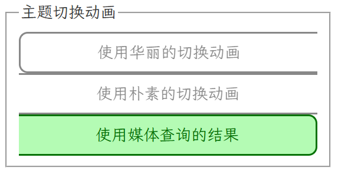

上一个修补琐记太古早了，再新建一个占个坑
2026/2/28: 真の缓存 & 一些小修小补
终于有时间倒腾一下小站了，把友链抽奖机的图片改成真·缓存，并且上传了近几次比赛写了的WP
原来的缓存是D老师写的，原理是预先访问一次，然后浏览器进行“缓存”
后来想起来为什么不用blob呢，于是就写了一个真·缓存，大致如下
1
2
3
4
| const response = await fetch(friend.avatar);
const blob = await response.blob();
const cachedURL = URL.createObjectURL(blob);
friend.avatar = cachedURL;
|
同时更新/修正了关于页的内容和样式，在友链抽奖机中加入了求友链的说明
2026/4/13: 友链++ & 小修小补 & 一个决定？
今天加了不少友链，开心~
对图片缓存逻辑进行了一点小修，try catch了一下url不支持CORS的情况，退回到浏览器自带缓存机制
以及决定择期上线一个每咕一题页面，闲的没事可以搓几道题史给大家尝尝
2026/4/17: 每咕一题调试完成上线
经过几天高强度的手搓代码，终于，每咕一题完成上线了！

本次代码保证纯手工打造，100%原汁原味（bushi
好了，其实还是让D老师帮忙写了一下HistoryAPI有关的代码的，这个东西我实在是不想吐槽了
下面展示一些技术细节
Tag组开关
1
2
3
4
5
6
7
8
9
10
11
12
13
14
15
16
| document.querySelectorAll('#index-page .tag').forEach(e => e.addEventListener("click", evt => {
if (![...evt.srcElement.parentElement.children].filter(elem => elem.classList.contains('deactive')).length) {
[...evt.srcElement.parentElement.children].forEach(elem => elem.classList.add("deactive"));
}
evt.srcElement.classList.toggle("deactive");
if (![...evt.srcElement.parentElement.children].filter(elem => !elem.classList.contains('deactive')).length) {
[...evt.srcElement.parentElement.children].forEach(elem => elem.classList.remove("deactive"));
}
pagecount = 0;
renderProblemList()
}));
|
筛选功能
1
2
3
4
5
6
7
8
9
10
11
12
13
14
15
16
17
18
19
20
21
22
| function doSearch() {
return Object.entries(problems).filter(kv => {
let [pid, item] = kv;
if (document.getElementById("search").value && !(item.title + item.desc.replace(/<.*?>/g, '')).toLowerCase().includes(document.getElementById("search").value.toLowerCase())) {
return false;
}
if (![...document.querySelectorAll("#solve-tags .tag:not(.deactive)")].map(e => e.innerText).includes(!(solveData['solved'][pid] || []).length ? '未解出' : (solveData['solved'][pid].length == item['flag'] ? '已解出' : '部分解出'))) {
return false;
}
if (!item["tags"].filter(t => [...document.querySelectorAll("#category-tags .tag:not(.deactive)")].map(e => e.innerText).includes(t)).length) {
return false;
}
if (!item["tags"].filter(t => [...document.querySelectorAll("#desc-tags .tag:not(.deactive)")].map(e => e.innerText).includes(t)).length) {
return false;
}
return true;
});
}
|
强兼博客代码样式
为了渲染WP中的内容（尤其是代码），我试了不少方式，最后还是决定手动解决WP渲染，就只剩下了一个code的highlight
经过搜索，我发现hexo的默认渲染引擎是highlight.js，并且默认移除hljs-前缀
我懒得修改hexo配置，于是就写了一段代码移除hljs-前缀，就可以使用博客主题分亮暗主题高亮了~
1
2
3
4
5
6
7
8
9
10
11
12
13
14
15
16
17
18
| function removeHljsPrefix(elem) {
elem.classList.forEach(i => {
if (i.startsWith('hljs-')) {
elem.classList.replace(i, i.slice(5));
}
});
[...elem.children].forEach(sub => removeHljsPrefix(sub));
}
hljs.highlightAll();
setTimeout(() => document.querySelectorAll('pre code').forEach(
elem => {
elem.classList.add("code");
elem.parentElement.classList.add("highlight");
removeHljsPrefix(elem);
}
), 10)
|
hook <details> & <a>
为了在打开折叠框/下载黑盒文件前弹窗，对这两个元素进行了click事件的监听
1
2
3
4
5
6
7
8
9
10
11
12
13
14
15
16
17
18
19
20
21
22
23
24
25
26
27
28
| function hookDetailsOpen(elem) {
elem.addEventListener("toggle", async (evt) => {
if (elem.open && (!elem.dataset.confirmed || elem.dataset.confirmed == 'false')) {
elem.open = false;
if (await showConfirm('折叠框内含有与解题思路相关度较高的内容，您确定要展开吗？', 'Spoiler Alert!')) {
elem.dataset.confirmed = true;
let arr = solveData['confirmed'][currentDisplayedPid] || [];
arr.push(elem.dataset.confirmId);
solveData['confirmed'][currentDisplayedPid] = arr;
saveData();
elem.open = true;
}
}
})
}
document.querySelectorAll("#problem-page details").forEach(elem => hookDetailsOpen(elem));
document.querySelectorAll("a[download][data-blackbox=true]").forEach(e => e.addEventListener("click", evt => {
evt.preventDefault();
showAlert('这是一个黑盒附件，请勿在解题时阅读其中内容！', '黑盒附件提醒', '!!', '我知道了', { danger: true }).then(() => {
const tempA = document.createElement('a');
tempA.href = evt.srcElement.href;
tempA.download = evt.srcElement.download;
tempA.click();
tempA.remove();
})
}))
|
好了，其实代码里还是有很多细节的，欢迎查看源码哦~
2026/4/21: 更多窗口支持地址栏回退
在每咕一题中，题目页是支持地址栏回退的，这使得移动端可以通过返回按钮（或等效手势）退出问题页。
然而其他窗口对于这种操作并不支持，于是基于又爱又恨的HistoryAPI，在尽可能少改动代码的前提下，为弹出modal增加这一功能。
我选择了使用popstate来完成，核心代码如下：
1
2
3
4
5
6
7
8
9
10
11
12
13
14
15
16
17
18
19
20
| let popStateHandle = null;
function registerPopStateHandle(handle) {
popStateHandle = handle;
history.pushState(null, null, '');
}
function cleanupPopStateHandle(){
if(popStateHandle){
popStateHandle = null;
history.go(-1);
}
}
window.addEventListener("popstate", ()=>{
if(popStateHandle){
const handle = popStateHandle;
popStateHandle = null;
handle();
}
})
|
popStateHandle是注册的返回键按下时触发的函数，用于关闭窗口registerPopStateHandle是一个帮助函数，集成了注册handle和pushState两步cleanupPopStateHandle是一个帮助函数，用于在handle未触发时清理handle和历史栈- 最后的
addEventListener注册监听函数，当注册了handle时，则调用它，注意这里清除handle和调用handle的顺序，先清除再调用使得handle中会调用cleanup的情况下不会过度清理历史栈
使用时，在弹出窗口处通过registerPopStateHandle注册handle，并在所有关闭窗口的地方（或者最后关闭窗口逻辑中）加入cleanupPopStateHandle来确保不污染历史栈和下一次操作，这样就可以通过返回键关闭窗口了~
2026/5/4: 若干小更新
回到学校里，捣腾一下博客
华丽切换动画
看到卡纳德的博客的主题切换动画，感觉挺有意思的，遂询问AI，得到是view-transition特性，于是查找文档成功复刻
核心参照的是MDN的这篇教程
简单修改之后，就完成了
1
2
3
4
5
6
7
8
9
10
11
12
13
14
15
16
17
18
19
20
21
22
23
24
25
26
27
28
29
30
31
32
33
34
35
36
37
38
39
40
41
42
43
| function switchColorScheme4Real(scheme){
localStorage.setItem("color-scheme", scheme)
if(scheme==='light'){
document.getElementById("sun").style.display = "none"
document.getElementById("moon").style.display = ""
let classlist = document.querySelector("html").classList
classlist.remove('night')
classlist.add('light')
}else{
document.getElementById("sun").style.display = ""
document.getElementById("moon").style.display = "none"
let classlist = document.querySelector("html").classList
classlist.add('night')
classlist.remove('light')
}
}
function switchColorScheme(scheme){
if(!document.startViewTransition){
switchColorScheme4Real(scheme)
return
}
const x = innerWidth
const y = innerHeight
const endRadius = Math.hypot(
Math.max(x, innerWidth - x),
Math.max(y, innerHeight - y),
)
document.startViewTransition(()=>switchColorScheme4Real(scheme)).ready.then(() => {
document.documentElement.animate(
{
clipPath: [
`circle(0 at ${x}px ${y}px)`,
`circle(${endRadius}px at ${x}px ${y}px)`,
]
},
{
duration: 400,
easing: "ease-in",
pseudoElement: "::view-transition-new(root)",
},
);
})
}
|
然后觉得这么花的动画可能有人不喜欢，CSS规范里也考虑到了这一点，有一个媒体查询(prefers-reduced-motion)，不过我印象里没看过这个选项，那就往feature页加一个好啦
1
2
3
4
5
6
7
8
9
10
11
12
13
14
15
16
17
18
19
20
21
22
23
| <style>
</style>
<fieldset>
<legend>主题切换动画</legend>
<div style="display: flex; flex-wrap: wrap;">
<button class="theme-change-opt" value="fancy">使用华丽的切换动画</button>
<button class="theme-change-opt" value="plain">使用朴素的切换动画</button>
<button class="theme-change-opt" value="media" title="遵循@media (prefers-reduced-motion)的结果">使用媒体查询的结果</button>
</div>
</fieldset>
<script>
document.querySelectorAll(".theme-change-opt").forEach(elem => {
elem.addEventListener("click", ((elem)=>()=>{
localStorage.setItem('reduce-motion', elem.value);
document.querySelectorAll(".theme-change-opt").forEach(e=>e.disabled = false);
elem.disabled = true;
})(elem))
})
document.querySelector(`.theme-change-opt[value=${localStorage.getItem('reduce-motion')??"media"}]`).disabled = true;
</script>
|
还是要翻文档，原来MDN里面有提到在哪里设置
然后修改一下switchColorScheme
1
2
3
4
5
6
7
8
9
| prefersReducedMotion = localStorage.getItem('reduce-motion') ? {fancy: false, plain: true, media: matchMedia('(prefers-reduced-motion)').matches}[localStorage.getItem('reduce-motion')] : matchMedia('(prefers-reduced-motion)').matches
function switchColorScheme(scheme){
if(!document.startViewTransition || prefersReducedMotion){
switchColorScheme4Real(scheme)
return
}
}
|
不同页面不刷新同步设置
简单来说就是window.addEventListener("focus", ...)来监听localStorage的变化，然后修改页面
以过场动画的设置项为例：
在使用时，直接从localStorage取值以避免使用旧值
1
2
3
4
5
6
| function switchColorScheme(scheme){
prefersReducedMotion = localStorage.getItem('reduce-motion') ? {fancy: false, plain: true, media: matchMedia('(prefers-reduced-motion)').matches}[localStorage.getItem('reduce-motion')] : matchMedia('(prefers-reduced-motion)').matches
}
|
在feature页，通过监听来更新选项
1
2
3
4
| window.addEventListener("focus", ()=>{
document.querySelectorAll(".theme-change-opt").forEach(e=>e.disabled = false);
document.querySelector(`.theme-change-opt[value=${localStorage.getItem('reduce-motion')??"media"}]`).disabled = true;
})
|
其他选项也是同理
更优返回按钮选项
在深入唾骂了解historyAPI之后，我终于写出了两种相对较优的返回按钮方案，原理比较简单
这两种都要对页内跳转锚点a[href^="#"]进行监听
一种是直接拦截默认行为，然后手动scrollIntoView，这种不会在历史中增加记录，成为新的默认值
另一种是拦截后增加计数器，记录回退次数，这种会增加历史条目，适合需要通过地址栏回退返回上一个锚点的用户使用
快去设置里调整一下优化体验吧！
使用Javascript动态添加按钮组边框
刚把博客推到github上，才发现feature页里的按钮组在手机上样式会炸掉

忘了你会wrap了.png
于是询问D老师，得知flex没有按行列的选择器，只好用js写一个了
不过D老师写的好乱，好几十行还一大堆注释，忍无可忍的我就自己写了一个
下面给出代码和注释
1
2
3
4
5
6
7
8
9
10
11
12
13
14
15
16
17
18
19
20
21
22
23
24
25
26
27
28
29
30
31
32
33
34
35
36
37
38
39
40
41
42
43
44
45
46
47
48
49
50
51
52
53
54
55
56
57
58
59
60
61
62
63
| <style>
.theme-change-opt.l {
border-left-width: 2px;
}
.theme-change-opt.t {
border-top-width: 2px;
}
.theme-change-opt.r {
border-right-width: 2px;
}
.theme-change-opt.b {
border-bottom-width: 2px;
}
.theme-change-opt.l.t {
border-top-left-radius: 10px;
}
.theme-change-opt.t.r {
border-top-right-radius: 10px;
}
.theme-change-opt.r.b {
border-bottom-right-radius: 10px;
}
.theme-change-opt.b.l {
border-bottom-left-radius: 10px;
}
</style>
<script>
function updateBorder() {
const container = document.getElementById("theme-change-opt-group");
const bigRect = container.getBoundingClientRect();
document.querySelectorAll(".theme-change-opt").forEach(elem => {
elem.classList.remove("l", "t", "r", "b");
const rect = elem.getBoundingClientRect();
for(let [ppt, cn] of [['top', 't'], ['right', 'r'], ['bottom', 'b'], ['left', 'l']]){
if(Math.abs(bigRect[ppt] - rect[ppt]) < 5){
elem.classList.add(cn);
}
}
})
}
function requestUpdateBorder() {
let requested;
if(requested){return;}
requested = true;
requestAnimationFrame(()=>{
updateBorder();
requested = false;
})
}
(new ResizeObserver(updateBorder)).observe(document.getElementById("theme-change-opt-group"));
</script>
|
简洁多了
D老师的源码
1
2
3
4
5
6
7
8
9
10
11
12
13
14
15
16
17
18
19
20
21
22
23
24
25
26
27
28
29
30
31
32
33
34
35
36
37
38
39
40
41
42
43
44
45
46
47
48
49
50
51
52
53
54
55
56
57
58
59
60
61
62
63
64
65
66
67
68
69
70
71
72
73
74
75
76
77
78
79
80
81
82
83
84
85
86
87
88
89
90
91
92
93
94
95
96
97
98
99
100
101
102
103
104
105
106
107
108
109
110
111
112
113
114
115
116
117
118
119
120
121
122
123
124
125
126
127
128
129
130
131
132
133
134
135
136
137
138
139
140
141
142
143
144
145
146
147
148
149
150
151
152
153
154
155
156
157
158
159
160
161
162
163
164
165
166
167
168
169
170
171
172
173
174
175
176
177
178
179
180
181
182
183
184
185
186
187
188
189
190
191
192
193
194
195
196
197
198
199
200
201
202
203
204
205
206
207
208
209
210
211
212
213
214
215
216
217
218
219
220
221
222
223
224
225
226
227
228
229
230
231
232
233
234
235
236
237
238
239
240
241
242
243
244
245
246
247
248
249
250
251
252
253
254
255
256
257
258
259
260
261
262
263
264
265
266
267
268
269
270
271
272
273
274
275
276
277
278
279
280
281
282
283
284
285
286
287
288
289
290
291
292
293
294
295
296
297
298
299
300
301
302
303
304
305
306
307
308
309
310
311
312
313
314
315
316
317
318
319
320
321
322
323
324
325
326
327
328
329
330
331
332
333
334
335
336
337
338
339
340
341
342
343
344
345
346
347
348
349
350
351
352
353
354
355
356
357
358
359
360
361
362
363
364
365
366
367
368
369
370
371
372
373
374
375
376
377
378
379
380
381
382
383
384
385
386
387
388
389
390
391
392
393
394
395
396
397
398
399
400
401
402
403
404
405
406
407
408
409
410
411
412
413
414
415
416
417
418
419
420
421
422
423
424
425
426
427
428
429
430
431
432
433
434
435
436
437
438
439
440
441
442
443
444
445
446
447
448
449
| <!DOCTYPE html>
<html lang="zh-CN">
<head>
<meta charset="UTF-8">
<meta name="viewport" content="width=device-width, initial-scale=1.0, user-scalable=yes">
<title>Flex子元素动态边框与圆角 | 朝外边框 + 角落圆角</title>
<style>
* {
margin: 0;
padding: 0;
box-sizing: border-box;
}
body {
background: linear-gradient(145deg, #eef2f7 0%, #d9e2ec 100%);
min-height: 100vh;
display: flex;
justify-content: center;
align-items: center;
font-family: 'Inter', system-ui, -apple-system, 'Segoe UI', Roboto, sans-serif;
padding: 2rem;
}
.demo-card {
max-width: 1300px;
width: 100%;
background: rgba(255,255,255,0.55);
backdrop-filter: blur(2px);
border-radius: 2rem;
box-shadow: 0 25px 45px -12px rgba(0,0,0,0.3);
padding: 1.8rem;
transition: all 0.2s;
}
h1 {
font-size: 1.8rem;
font-weight: 600;
color: #0a1927;
letter-spacing: -0.3px;
margin-bottom: 0.3rem;
}
.desc {
color: #1e3a3a;
border-left: 4px solid #2c7a7b;
padding-left: 1rem;
margin-bottom: 1.8rem;
font-size: 0.9rem;
font-weight: 500;
}
.flex-container {
display: flex;
flex-wrap: wrap;
gap: 0;
background-color: #fef9e8;
border-radius: 16px;
box-shadow: 0 4px 12px rgba(0,0,0,0.05);
padding: 0;
}
.flex-container > * {
flex: 1;
box-sizing: border-box;
background-color: #ffffff;
color: #1e2f2f;
text-align: center;
padding: 1rem 0.75rem;
font-weight: 500;
font-size: 0.95rem;
transition: all 0.15s ease;
border-style: solid;
border-color: #1f5e5e;
border-width: 0px;
border-radius: 0;
background-clip: padding-box;
}
.flex-container > *:hover {
background-color: #fff7e8;
transform: translateY(-1px);
box-shadow: 0 6px 12px rgba(0,0,0,0.05);
z-index: 2;
position: relative;
}
.flex-container > .l {
border-left-width: 2px;
}
.flex-container > .t {
border-top-width: 2px;
}
.flex-container > .r {
border-right-width: 2px;
}
.flex-container > .b {
border-bottom-width: 2px;
}
.flex-container > .l.t {
border-top-left-radius: 10px;
}
.flex-container > .t.r {
border-top-right-radius: 10px;
}
.flex-container > .r.b {
border-bottom-right-radius: 10px;
}
.flex-container > .b.l {
border-bottom-left-radius: 10px;
}
.flex-container > * {
word-break: keep-all;
white-space: nowrap;
}
@media (max-width: 640px) {
.flex-container > * {
white-space: normal;
word-break: break-word;
padding: 0.8rem 0.5rem;
font-size: 0.8rem;
}
}
.info-panel {
margin-top: 1.8rem;
background: #e9f0e6;
border-radius: 1rem;
padding: 1rem 1.2rem;
font-size: 0.85rem;
color: #1f3d3a;
display: flex;
gap: 1rem;
flex-wrap: wrap;
justify-content: space-between;
align-items: center;
}
.badge {
background: #2c7a7b;
color: white;
padding: 0.2rem 0.7rem;
border-radius: 20px;
font-size: 0.7rem;
font-weight: 600;
}
button {
background: #2c7a7b;
border: none;
color: white;
padding: 0.4rem 1rem;
border-radius: 2rem;
font-weight: 500;
cursor: pointer;
transition: 0.1s;
font-family: inherit;
}
button:hover {
background: #1f5e5e;
transform: scale(0.96);
}
.resize-note {
font-family: monospace;
font-size: 0.7rem;
}
hr {
margin: 12px 0;
border-color: #cbd5e1;
}
</style>
</head>
<body>
<div class="demo-card">
<h1>🔲 动态朝外边框 · 智能圆角</h1>
<div class="desc">
Flex 子元素（<code>flex: 1</code>）自动添加 <strong>l / t / r / b</strong> 类 → 仅显示组外边框，内部无重叠边框。<br>
<code>.l.t</code>、<code>.t.r</code>、<code>.r.b</code>、<code>.b.l</code> 自动产生 <strong>10px 圆角</strong>。窗口缩放或换行时实时更新。
</div>
<div class="flex-container" id="dynamicFlexContainer">
<div>首页</div>
<div>产品方案</div>
<div>技术文档</div>
<div>开发者社区</div>
<div>支持与服务</div>
<div>关于我们</div>
<div>最新活动</div>
<div>资源中心</div>
</div>
<div class="info-panel">
<span>✅ 子元素自动获得 <strong>朝外侧边框</strong>（上下左右依据行列）</span>
<span>🎯 四角圆角（左上/右上/右下/左下）仅在相邻边框同时出现时生效</span>
<button id="refreshBtn">🔄 强制刷新边框布局</button>
</div>
<div class="resize-note" style="margin-top: 12px; text-align: right; color:#2c5a5a;">
💡 提示: 拖拽浏览器窗口宽度 → Flex 自动换行 → 边框与圆角动态适配 (ResizeObserver + 防抖)
</div>
</div>
<script>
(function() {
const CONTAINER_SELECTOR = '#dynamicFlexContainer';
const container = document.querySelector(CONTAINER_SELECTOR);
if (!container) {
console.error(`未找到容器: ${CONTAINER_SELECTOR}`);
return;
}
const computedStyle = window.getComputedStyle(container);
if (computedStyle.display !== 'flex' && !computedStyle.display.includes('flex')) {
console.warn('容器未设置 display: flex，边框逻辑可能不准确，请添加 flex 布局');
}
function getChildElements(parent) {
return Array.from(parent.children).filter(el => {
const style = window.getComputedStyle(el);
return style.display !== 'none' && style.visibility !== 'collapse';
});
}
function removeBorderClasses(el) {
el.classList.remove('l', 't', 'r', 'b');
}
function updateDynamicBorders() {
const children = getChildElements(container);
if (children.length === 0) return;
const containerRect = container.getBoundingClientRect();
const itemsData = children.map(el => {
const rect = el.getBoundingClientRect();
return {
el: el,
top: rect.top - containerRect.top,
left: rect.left - containerRect.left,
right: rect.right - containerRect.left,
bottom: rect.bottom - containerRect.top,
width: rect.width,
height: rect.height
};
});
const TOLERANCE = 2.5;
const sortedByTop = [...itemsData].sort((a, b) => a.top - b.top);
const rows = [];
let currentRow = [];
for (let i = 0; i < sortedByTop.length; i++) {
const item = sortedByTop[i];
if (currentRow.length === 0) {
currentRow.push(item);
} else {
const firstTop = currentRow[0].top;
if (Math.abs(item.top - firstTop) <= TOLERANCE) {
currentRow.push(item);
} else {
currentRow.sort((a, b) => a.left - b.left);
rows.push([...currentRow]);
currentRow = [item];
}
}
}
if (currentRow.length) {
currentRow.sort((a, b) => a.left - b.left);
rows.push(currentRow);
}
children.forEach(child => removeBorderClasses(child));
for (let rowIdx = 0; rowIdx < rows.length; rowIdx++) {
const row = rows[rowIdx];
if (row.length === 0) continue;
const firstItem = row[0];
firstItem.el.classList.add('l');
const lastItem = row[row.length - 1];
lastItem.el.classList.add('r');
}
if (rows.length > 0) {
const firstRow = rows[0];
firstRow.forEach(item => {
item.el.classList.add('t');
});
}
if (rows.length > 0) {
const lastRow = rows[rows.length - 1];
lastRow.forEach(item => {
item.el.classList.add('b');
});
}
}
let pendingUpdate = false;
const scheduleUpdate = () => {
if (pendingUpdate) return;
pendingUpdate = true;
requestAnimationFrame(() => {
updateDynamicBorders();
pendingUpdate = false;
});
};
function debounce(func, delay) {
let timer;
return function(...args) {
clearTimeout(timer);
timer = setTimeout(() => func.apply(this, args), delay);
};
}
const debouncedResize = debounce(() => {
scheduleUpdate();
}, 100);
window.addEventListener('resize', debouncedResize);
let resizeObserver = null;
if (typeof ResizeObserver !== 'undefined') {
resizeObserver = new ResizeObserver(() => {
scheduleUpdate();
});
if (container) {
resizeObserver.observe(container);
}
}
const mutationObserver = new MutationObserver((mutations) => {
let needUpdate = false;
for (const mutation of mutations) {
if (mutation.type === 'childList') {
needUpdate = true;
break;
}
if (mutation.type === 'attributes' && (mutation.attributeName === 'style' || mutation.attributeName === 'class')) {
if (mutation.target !== container) {
needUpdate = true;
}
}
}
if (needUpdate) {
scheduleUpdate();
}
});
mutationObserver.observe(container, { childList: true, subtree: false, attributes: true, attributeFilter: ['style', 'class'] });
if (document.readyState === 'loading') {
document.addEventListener('DOMContentLoaded', () => {
scheduleUpdate();
});
} else {
scheduleUpdate();
}
window.addEventListener('load', () => {
scheduleUpdate();
setTimeout(scheduleUpdate, 150);
});
window.addEventListener('orientationchange', () => {
setTimeout(scheduleUpdate, 80);
});
const refreshBtn = document.getElementById('refreshBtn');
if (refreshBtn) {
refreshBtn.addEventListener('click', () => {
scheduleUpdate();
refreshBtn.textContent = '✨ 已刷新';
setTimeout(() => {
refreshBtn.textContent = '🔄 强制刷新边框布局';
}, 800);
});
}
window.__refreshFlexBorders = scheduleUpdate;
console.log('✅ 动态边框脚本已启动 — 根据行列自动为flex子元素分配 l/t/r/b 类，并组合圆角');
})();
</script>
</body>
</html>
|
这样就好了~

欧，应该把border和border-radius从transition里面排除掉才对

2026/7/3 友链抽奖机交互/界面小更新
闲的没事小更新一下
extra字段用于记录友链图像的额外样式，为图像为圆形设计的友链加入了circle类，显示为圆
需要其他样式的dsz可以在加友链时附上CSS
为我的友链信息增加user-select: text
之前整个抽奖机都是user-select: none，忘记给这个加可选择的样式了
现在友链抽奖机的弹窗可以使用Esc关闭
依托之前的History返回handle，补充了Esc关闭的逻辑
1
2
3
4
5
6
7
| window.addEventListener("keydown", (evt) => {
if (popStateHandle && evt.key === "Escape"){
const handle = popStateHandle;
popStateHandle = null;
handle();
}
})
|